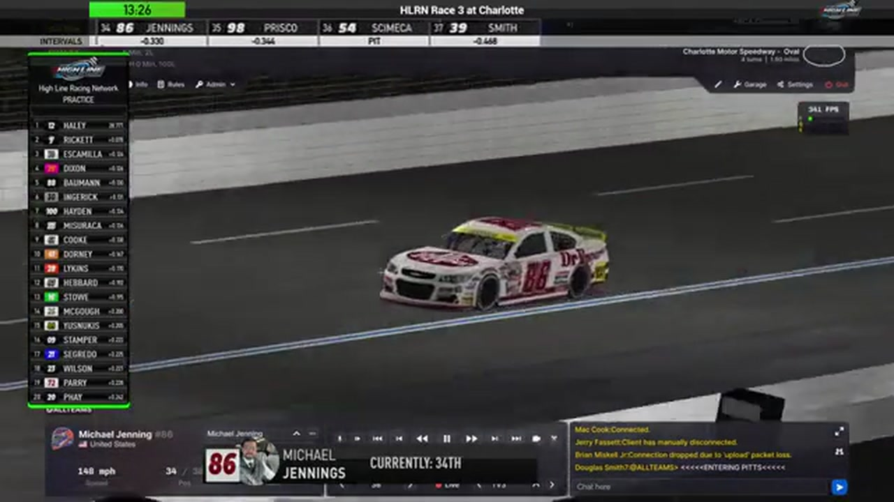

Michael Jennings
Team assignment not stated in the structured owner record.
AN OFFICIAL-TAPE FOOTPRINT, NOT A RESULTS CLAIM
- Official files
- 11
- Central editions
- 0
- Exact tape cues
- 3
- Accepted podiums
- 0
Michael Jennings appears in 11 official HLRN broadcast files across Season 1. The current result ledger does not assign this driver a supported top-three finish. A consistently stated team affiliation remains open for owner review. The currently indexed source window runs from December 1, 2025 through March 28, 2026.
The primary chapter index supplies 3 direct jump points. Talladega is the most frequent named track in the current appearance ledger. The densest direct-tape categories are strategy (1 cue) and incident (1 cue). Those counts describe where the name is easiest to find; they are not fault, pace, or performance grades. A source-attributed car frame is published with its original video and timestamp. That is the current discovery map for Michael Jennings.
Official name signals are used for discovery only. They do not become starts, points, incident counts, or an ability grade. This page is deliberately detailed about the tape and restrained about the unavailable competition record. Separately, 5 Highline Live files sit on the bonus shelf and never enter the official season ledger. The displayed name is labeled broadcast lower third confirmed; that status remains visible so an owner roster can strengthen or correct the identity without rewriting the evidence trail. Those boundaries define Michael Jennings's public HLRN file.
3 featured race-tape cues
These are discovery routes into complete HLRN broadcasts, not performance grades or inferred results.
- S1 / R9 · STRATEGY
Michael Jennings enters the Chicagoland pit-strategy swing
S1 / R9 at 1:13:17: Pit timing starts to reorganize the field, with Michael Jennings, Brian Hebert, and Jerry Fassett named in the sequence. The clip is a strategy receipt from the primary Chicagoland broadcast, not a reconstructed scoring sheet.
Chicagoland - S1 / R7 · INCIDENT
Michigan measures the fallout from its largest wreck
The replay closes on contact involving Michael Jennings, Randy Switzer, Jerry Fassett, and Shawn Stamper. HLRN calls it the biggest wreck of the night before resetting the field for the next restart.
Michigan - S1 / R3 · POSTRACE
Michael Jennings and Timothy Tyler anchor the Charlotte post-race result review
S1 / R3 at 2:02:15: The reviewed live-race close has passed before this Charlotte result booth review begins with Michael Jennings and Timothy Tyler named in the discussion. It remains post-race context, not a new incident, stage, strategy call, finish, or result receipt.
Charlotte
Verified team history is not consistently stated. No position-specific top-three result is currently accepted. The public spelling has broadcast identity support; an owner roster can still add legal-name, number, and team-history detail.